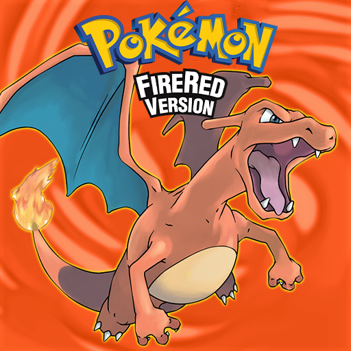
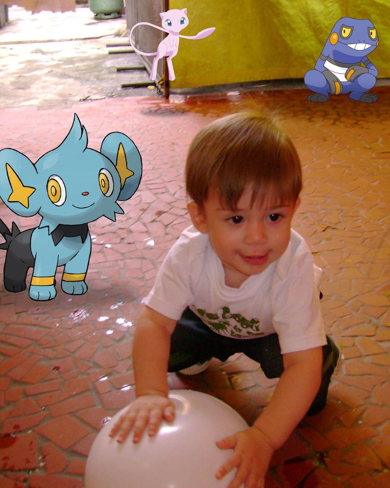

Sobre Mim (Gustavo Vieck)
 Pokémon foi uma franquia muito presente na minha infância, tanto os jogos quanto os animes. Querendo reviver a nostalgia de Pokémon, eu acabei criando o projeto Vieckemon com um jogo simples e divertido chamado PokeRun, para que os jogadores consigam ter a experiência única desse universo gigantesco que muda tantas vidas.
Pokémon foi uma franquia muito presente na minha infância, tanto os jogos quanto os animes. Querendo reviver a nostalgia de Pokémon, eu acabei criando o projeto Vieckemon com um jogo simples e divertido chamado PokeRun, para que os jogadores consigam ter a experiência única desse universo gigantesco que muda tantas vidas.
Jogo Favorito:
 Por volta dos meus 11 anos, um amigo da escola me apresenta os jogos de pokémon, me fazendo viciar em pokémon FireRed. Sendo o jogo que eu mais tenho carinho até os dias atuais.
Infância:
 Cresci assitindo pokémon em toda a minha infância, esse universo acabou formando muitos valores em mim que levo até hoje, como: amizade, lealdade e superação.
Pokémon Favorito:
 Sempre me vi como uma pessoa brincalhona e carismática. No anime de pokémon o treinador 'Brock' tinha um Croagunk, e pelo seu forte carisma ele sempre foi o meu pokémon favorito.
Sempre me vi como uma pessoa brincalhona e carismática. No anime de pokémon o treinador 'Brock' tinha um Croagunk, e pelo seu forte carisma ele sempre foi o meu pokémon favorito.